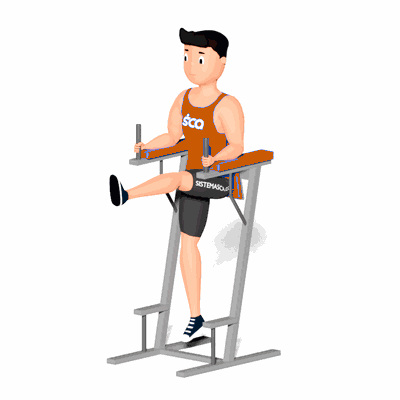

Flexão Alternada de Quadril nas Paralelas

O exercício tem como objetivo trabalhar o fortalecimento da região abdominal e lombar. Por conta da força exigida para levantar e abaixar as pernas, a parte superior do abdômen é o mais exigido no exercício.
Ficha Técnica
Tipo: Musculação
Grupo Muscular: Abdome
Aparelho: Nenhum
Músculos: Nenhum
Como realizar
- Posicione-se de costas para o aparelho e apoie os antebraços firmemente nas almofadas;
- Mantendo a postura correta;
- Contraia os músculos da região abdominal puxando a perna direita para cima em direção ao peito;
- Lentamente, retorne à posição inicial;
- Contraia novamente os músculos da região abdominal, porém agora puxando a perna esquerda para cima em direção ao peito;
- Lentamente, retorne à posição inicial e repita os movimentos alternando as pernas.
 RC STORE
RC STORE